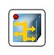

| Manual NetEmul | ||
|---|---|---|
| Prev. | Next | |
The main function of the hub is a repetition of the signals arriving on one of its ports, on all other ports (Ethernet) or on the following in a logical ring port (Token Ring, FDDI) synchronously with signals-originals. Hubs derivate the common environment of data transfer - a logical segment. A logical segment also name as the domain of collisions as at attempt of simultaneous data transfer of any two computers of this segment there is a transmission medium locking. All computers connected to hubs, derivate a uniform logical segment in which any pair of co-operating devices completely locks Possibility of data exchange for other computers.
It is a hub icon. It fulfils all functions described above. Occurrence of collisions cable highlighting.
| Prev. | Main | Next |
| Computer | On level above | Switch |